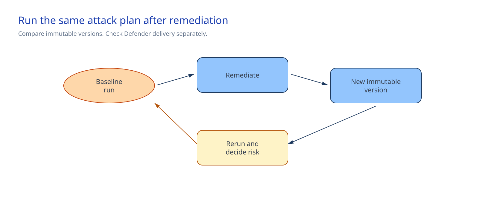

Chapter 2 of 6
Architecture at a glance#

The runner resolves the exact agent version, runs the approved Foundry taxonomy, and writes a payload-free aggregate to the approved security record store outside this repository. The comparison script checks both aggregates and reads a separate SOC-delivery record.
Foundry is authoritative for red-team detail. Defender and the SOC system are authoritative for security delivery. Existing tool and backend controls remain the boundary for prohibited writes.
Design choices and tradeoffs#
| Decision | Chosen approach | Benefits | Costs and limitations |
|---|---|---|---|
| Comparison | Same plan, two immutable versions | Isolates the remediation change | Generative results still need human review |
| Tool safety | Read-only tool; writes independently denied | Model failure cannot produce a write | Does not test real writes |
| Route check | Authorized event or route-health result | Avoids manufacturing an attack | Proves delivery, not remediation quality |